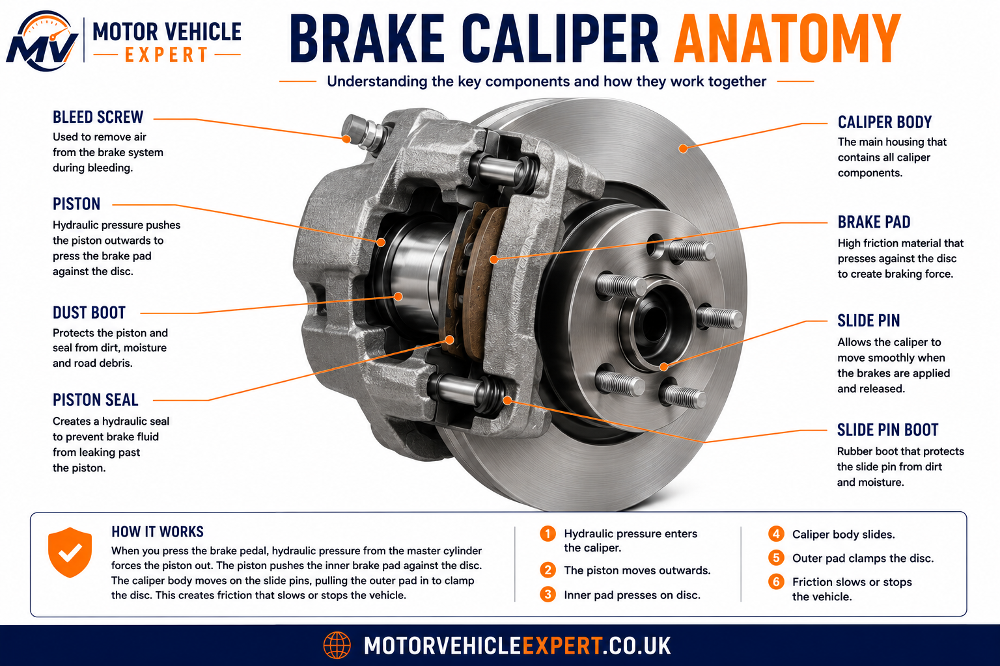
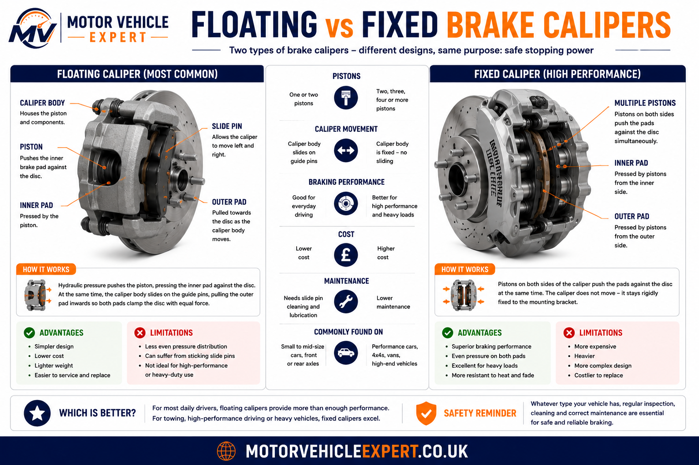
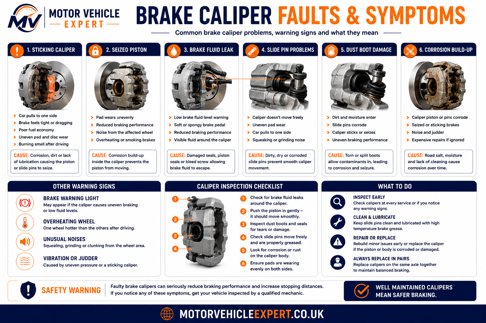
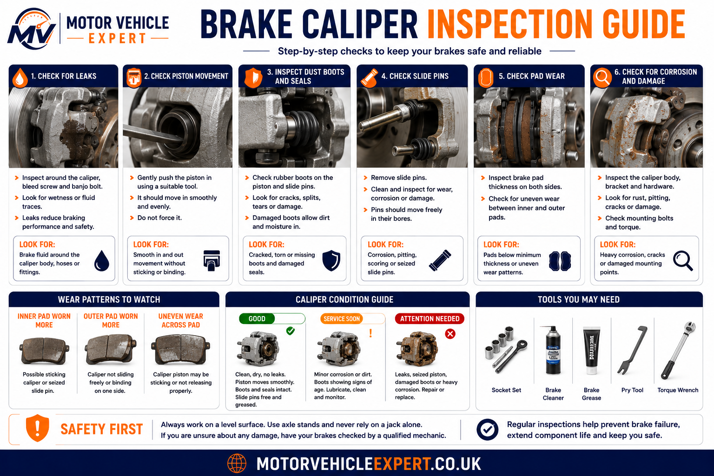

What does a brake caliper do?
A brake caliper holds the brake pads and uses hydraulic pressure to press them against the brake disc. This clamping action creates friction, slows the wheel and brings the vehicle under control. Without a correctly working caliper, the brake pads cannot apply even pressure to the disc.
What does it control?
The caliper controls how the brake pads clamp onto the brake disc during braking.
What commonly fails?
Pistons, seals, slide pins, dust boots, bleed screws and caliper bodies can seize, leak or corrode.
What is urgent?
Pulling, brake drag, overheating wheels, fluid leaks, burning smells or uneven pad wear need prompt inspection.
A brake caliper fault can easily be mistaken for worn pads or warped discs. If one side wears faster, one wheel gets hotter, or the vehicle pulls when braking, the caliper should be checked before replacing parts.
Brake Caliper Anatomy Explained
A brake caliper contains several parts that must move and seal correctly. The caliper body supports the brake pads, the piston applies hydraulic force, the seals keep brake fluid contained, and slide pins allow floating calipers to move evenly across the brake disc.
Caliper Body
The main metal housing that supports the piston, pads, slide pins and hydraulic connection.
Piston & Seal
The piston pushes the pad against the disc while the seal prevents brake fluid escaping.
Slide Pins
Floating calipers use slide pins so the caliper can move smoothly and apply even pressure.

Understanding these parts helps explain why a caliper can stick, leak, overheat or wear brake pads unevenly.
How Brake Calipers Work
Brake calipers convert hydraulic pressure from the brake master cylinder into clamping force. When you press the brake pedal, brake fluid carries pressure through the brake pipes into the caliper piston. The piston pushes the inner brake pad against the brake disc while the caliper body applies equal pressure to the outer pad, creating the friction needed to slow the vehicle.
Step 1 — Hydraulic Pressure
Pressing the brake pedal forces brake fluid from the master cylinder through the brake pipes into each brake caliper.
Step 2 — Piston Movement
Hydraulic pressure pushes the piston outward, forcing the inner brake pad against the rotating brake disc.
Step 3 — Clamping Force
On a floating caliper the body slides sideways, allowing the outer brake pad to clamp the opposite side of the disc with equal force.
Step 4 — Vehicle Slows
Friction between the pads and the brake disc converts movement into heat, slowing the wheel safely and predictably.
Every part of the braking system depends on the caliper working correctly. Even brand-new brake pads and brake discs cannot perform properly if the caliper sticks, leaks or cannot apply equal pressure.
Floating vs Fixed Brake Calipers
Most everyday UK cars use floating brake calipers because they are compact, reliable and inexpensive to manufacture. High-performance cars often use fixed calipers with multiple pistons for greater clamping force, improved pedal feel and better heat management.

Floating Brake Calipers
- ✓Single piston is most common.
- ✓Slides on lubricated guide pins.
- ✓Lower manufacturing cost.
- ✓Easy to service and repair.
- ✓Used on most everyday UK vehicles.
Fixed Brake Calipers
- ✓Two, four, six or more pistons.
- ✓Caliper body does not slide.
- ✓Excellent pedal feel.
- ✓Superior heat distribution.
- ✓Common on sports and luxury vehicles.
Floating calipers usually suffer from seized slide pins, while fixed calipers are more likely to require piston seal servicing. Understanding which type your vehicle uses makes diagnosis much easier.
Single-Piston vs Multi-Piston Brake Calipers
The number of pistons inside a brake caliper affects how evenly braking force is distributed across the brake pads. More pistons generally provide better pressure distribution, improved heat control and greater stopping performance, particularly during repeated heavy braking.
Single Piston
1 pistonCompact, reliable and inexpensive. Common on family cars and light commercial vehicles.
Twin Piston
2 pistonsProvides more even pad pressure while remaining relatively simple to maintain.
Four Piston
4 pistonsCommon on performance cars where stronger and more consistent braking is required.
Six & Eight Piston
6–8 pistonsUsed on sports cars, racing applications and heavy high-performance vehicles requiring maximum stopping power.
More pistons do not automatically mean shorter stopping distances. Tyre grip, brake discs, brake pad material and ABS performance all play an equally important role in overall braking performance.
Common Brake Caliper Faults
Brake calipers work in a harsh environment close to road salt, heat, water, brake dust and corrosion. Over time, moving parts can seize, seals can fail and the caliper may stop applying or releasing pressure correctly.
Sticking Slide Pins
Dry, rusty or seized slide pins prevent a floating caliper from moving freely, causing uneven pad wear and brake drag.
Seized Piston
Corrosion or damaged seals can stop the piston retracting properly, leaving the brake pad rubbing against the disc.
Brake Fluid Leak
A failed piston seal, damaged hose connection or bleed screw fault can allow brake fluid to escape.
Torn Dust Boot
A split dust boot allows water and dirt to reach the piston, often leading to corrosion and sticking.
Corroded Caliper Body
Heavy corrosion can weaken the caliper, affect pad movement and make future servicing difficult.
Rounded Bleed Screw
A seized or damaged bleed screw can make brake bleeding difficult and may require caliper replacement.

Sticking or Seized Brake Caliper Symptoms
A sticking brake caliper may stay partly applied even when your foot is off the brake pedal. This creates heat, drag, uneven pad wear and extra load on the braking system. If ignored, it can damage brake pads, brake discs, wheel bearings and tyres.
Car Pulls to One Side
If one caliper applies more force or fails to release, the vehicle may pull left or right while braking or driving.
One Wheel Feels Hot
Excess heat around one wheel after normal driving strongly suggests brake drag or a sticking caliper.
Burning Smell
A hot friction smell may indicate the pads are being held against the disc continuously.
Uneven Pad Wear
One pad wearing much faster than the other often points to seized slide pins or piston issues.
Poor Fuel Economy
A dragging brake increases rolling resistance and can make the vehicle feel less free-moving.
Smoke From Wheel
Smoke or severe heat from a wheel is dangerous and the vehicle should not be driven until inspected.
Do not touch a suspected hot wheel, brake disc or caliper with your hand. A seized caliper can generate extreme temperatures and cause burns. Allow the vehicle to cool and arrange professional inspection.
Brake Caliper Inspection Guide
A proper brake caliper inspection checks whether the caliper applies pressure smoothly, releases correctly and remains free from leaks, corrosion and seized moving parts. This is especially important when uneven pad wear, brake drag or brake judder is present.

Fluid Leaks
The caliper body, piston seal, bleed screw and hose connection are checked for brake fluid leaks.
Piston Movement
The piston should move smoothly and retract correctly when hydraulic pressure is released.
Slide Pin Movement
Floating calipers must slide freely on lubricated guide pins without sticking or excessive play.
Dust Boots & Seals
Torn boots allow dirt and moisture into the caliper and often lead to piston corrosion.
Pad Wear Pattern
Uneven inner and outer pad wear can reveal seized slide pins, sticking pistons or poor pad movement.
Road Test
A road test confirms brake feel, pulling, noise, drag, temperature difference and correct release.
If one brake pad is badly worn while the opposite pad still has plenty of material left, do not just fit new pads. The caliper, carrier and slide pins must be inspected or the same uneven wear will return.
Can Brake Calipers Be Rebuilt?
Many brake calipers can be rebuilt rather than replaced, but whether rebuilding is the right option depends on the condition of the caliper body, piston and seals. Professional rebuild kits are widely available for many vehicles and typically include new piston seals, dust boots, guide pin boots and replacement hardware. However, rebuilding is only worthwhile when the caliper housing itself remains structurally sound.
Modern replacement calipers have become far more affordable over the last decade, which means many UK garages now recommend fitting a quality replacement caliper rather than spending labour time rebuilding an old, heavily corroded unit. Nevertheless, rebuilding remains common on classic cars, specialist vehicles and performance brake systems where original calipers are expensive or difficult to replace.
Rebuilding May Be Suitable
- ✓Caliper body is free from cracks.
- ✓Piston bore is smooth.
- ✓Only seals or boots are worn.
- ✓Slide pins remain serviceable.
- ✓No severe corrosion is present.
Replacement Is Usually Better
- ✓Heavy corrosion around the piston.
- ✓Cracked caliper body.
- ✓Damaged bleed screw threads.
- ✓Repeated seizure after previous repairs.
- ✓Hydraulic fluid leakage from the casting.
Labour costs in the UK often make replacement more economical than rebuilding. Once the caliper has been removed, dismantled, cleaned, rebuilt, reassembled, refitted and the braking system bled, the total labour time can exceed the cost of fitting a professionally remanufactured caliper with a warranty.
Seal Kit Only
£15–£45Suitable where the piston and caliper housing remain in excellent condition.
Professional Rebuild
£90–£180Common for classic cars, performance vehicles and specialist brake systems.
Replacement Caliper
£180–£450+Usually the preferred option for modern vehicles because of reliability, warranty and lower overall labour costs.
Never rebuild a caliper simply because a repair kit is available. The piston bore must be perfectly smooth and free from corrosion. Even tiny corrosion pits can damage new seals and cause brake fluid leaks shortly after the repair.
Brake Calipers and the MOT Test
Brake calipers are inspected as part of the UK MOT because they directly affect braking efficiency and vehicle safety. An MOT tester will not dismantle the caliper, but they will assess its external condition, security, hydraulic leaks and overall braking performance using both a visual inspection and the brake roller test.
Likely MOT Pass
- ✓No hydraulic leaks.
- ✓Secure mounting bolts.
- ✓Balanced braking performance.
- ✓No excessive brake drag.
- ✓Normal brake efficiency.
Likely MOT Failure
- ✓Brake fluid leakage.
- ✓Caliper insecure or damaged.
- ✓Severe brake imbalance.
- ✓Brake binding affecting efficiency.
- ✓Dangerously reduced braking performance.
If you suspect a sticking brake caliper before an MOT, have it inspected first. Repairing a seized slide pin or leaking caliper before the test is usually far cheaper than replacing damaged brake pads, brake discs and tyres later.
Brake Caliper Replacement Costs UK
Brake caliper replacement costs vary depending on the vehicle, whether the front or rear axle is being repaired, and whether genuine, aftermarket or remanufactured parts are fitted. Labour charges, brake fluid replacement and additional work involving the brake pads, brake discs or brake fluid can also affect the final invoice.
Front Brake Caliper
£180–£350Usually includes one replacement caliper, installation and brake fluid bleeding where required.
Rear Brake Caliper
£180–£400Rear calipers fitted with electronic parking brakes often require additional diagnostic setup after replacement.
Performance Vehicles
£350–£900+Multi-piston aluminium calipers fitted to sports and performance cars are considerably more expensive to repair or replace.
Not every brake caliper fault requires complete replacement. Minor problems such as seized slide pins or worn dust boots may be repaired at relatively low cost, while leaking, heavily corroded or structurally damaged calipers are normally replaced. Labour charges, brake fluid bleeding and any associated brake pad or brake disc replacement should always be included when comparing repair quotations.
| Brake Caliper Repair | Typical UK Cost | When It Is Usually Recommended |
|---|---|---|
| Caliper Seal Kit | £15–£45 | Minor seal wear where the piston and caliper housing remain in excellent condition. |
| Professional Caliper Rebuild | £90–£180 | Suitable when the caliper body is serviceable but seals, boots or slide pins require refurbishment. |
| Replacement Front Brake Caliper | £180–£350 | Recommended for leaking, seized or heavily corroded front brake calipers. |
| Replacement Rear Brake Caliper | £180–£400 | Commonly required when rear calipers seize, leak or electronic parking brake components fail. |
| Performance Brake Caliper | £350–£900+ | Typical for sports, performance and premium vehicles using multi-piston braking systems. |
A sticking brake caliper identified early may only require cleaning and lubrication of the slide pins or replacement of inexpensive seals. Continuing to drive with a seized caliper can rapidly destroy the brake pads, overheat the brake discs and even damage wheel bearings, making the eventual repair significantly more expensive.
Buying a Used Car with Brake Caliper Problems
Brake caliper faults are not always obvious during a short test drive. Many used cars with sticking calipers appear to drive normally until the brakes become hot. Carrying out a careful inspection can help avoid expensive repairs shortly after purchase.
Good Signs
- ✓Even brake pad wear.
- ✓No pulling while braking.
- ✓Clean, dry calipers.
- ✓Smooth braking performance.
- ✓No burning smell.
Warning Signs
- ✓Vehicle pulls to one side.
- ✓Uneven brake pad wear.
- ✓Blue or heavily scored brake discs.
- ✓Hot wheel after driving.
- ✓Brake fluid around the caliper.
Ask for invoices showing previous brake work. If only one brake pad has recently been replaced or one brake disc looks much newer than the other, ask whether a sticking caliper caused uneven wear.
Brake Caliper FAQs
What does a brake caliper do?
A brake caliper converts hydraulic pressure into clamping force by pushing the brake pads against the brake disc to slow the vehicle.
Can a sticking brake caliper damage brake discs?
Yes. Continuous brake drag creates excessive heat which can score, overheat or permanently damage the brake disc surface.
Can a faulty brake caliper fail an MOT?
Yes. Hydraulic leaks, seized calipers, excessive brake imbalance or poor braking performance can all result in an MOT failure.
Can brake calipers be rebuilt?
Many can be rebuilt using seal kits, but replacement is often recommended if corrosion or structural damage is present.
Should brake calipers be replaced in pairs?
Not always, but replacing both calipers on the same axle is often recommended when both are heavily worn or corroded.
How long do brake calipers normally last?
Many brake calipers last well over 100,000 miles when serviced correctly, although corrosion, lack of maintenance and road salt can shorten their lifespan.
Explore the Complete Braking System Knowledge Hub
Brake calipers are just one component of a modern hydraulic braking system. Explore the complete Motor Vehicle Expert braking cluster to understand how every braking component works together, diagnose faults more accurately, prepare for MOT inspections and estimate realistic UK repair costs.
Disc Brakes Explained
The complete braking system hub covering how every brake component works together.
Brake Pads Explained
Learn how brake pads create friction, wear over time and when they should be replaced.
Brake Discs Explained
Understand brake disc construction, wear patterns, minimum thickness and replacement advice.
Brake Fluid Explained
Discover why brake fluid is essential, how contamination occurs and when it should be replaced.
Brake Pipes Explained
Learn how brake pipes safely carry hydraulic pressure throughout the braking system.
Brake Servo Explained
Understand how the brake servo reduces pedal effort and improves braking performance.
Brake Master Cylinder Explained
Learn how the master cylinder converts pedal pressure into hydraulic braking force.
ABS Explained
Discover how the Anti-lock Braking System prevents wheel lock-up and maintains steering control during emergency braking.
Brake Hoses Explained
Learn how flexible brake hoses connect the hydraulic system to each brake caliper and why hose condition is critical for safety.
Brake Fluid Change Cost UK
Compare realistic UK brake fluid replacement costs, service intervals and maintenance advice.
Brake Disc Replacement Cost UK
Compare realistic UK replacement prices for brake discs, labour and associated repairs.
Brake Caliper Replacement Cost UK
Compare realistic UK brake caliper replacement costs, rebuilding options and labour charges.
Each guide in the Motor Vehicle Expert braking cluster focuses on one component of the braking system while linking naturally to the next. Reading the guides together provides a complete understanding of how hydraulic pressure is generated, transmitted and converted into safe, controlled stopping power.
Final Thoughts
Brake calipers play a vital role in every disc braking system by converting hydraulic pressure into the clamping force needed to slow your vehicle safely. Although they are designed to last for many years, corrosion, seized slide pins, sticking pistons and hydraulic leaks can gradually reduce braking performance and increase repair costs if left unchecked.
Regular brake inspections, quality replacement components and servicing small faults before they become major failures will help maintain reliable braking performance, reduce MOT failures and improve long-term vehicle safety.
Modern brake calipers are extremely reliable when serviced correctly, but like every hydraulic component they benefit from regular inspections, clean brake fluid and prompt attention to early warning signs. Understanding how the caliper interacts with the brake pads, brake discs and hydraulic system makes diagnosing braking problems far easier and can prevent costly repairs later.
If your vehicle pulls to one side, develops uneven brake pad wear, produces a burning smell or has one wheel noticeably hotter than the others after driving, the brake caliper should be inspected immediately before further damage occurs.
About This Guide
This guide forms part of the Motor Vehicle Expert braking system knowledge base. Every article is written for UK drivers using practical workshop knowledge, manufacturer guidance and real-world diagnostic procedures to help you understand your vehicle, reduce repair costs and make informed maintenance decisions.